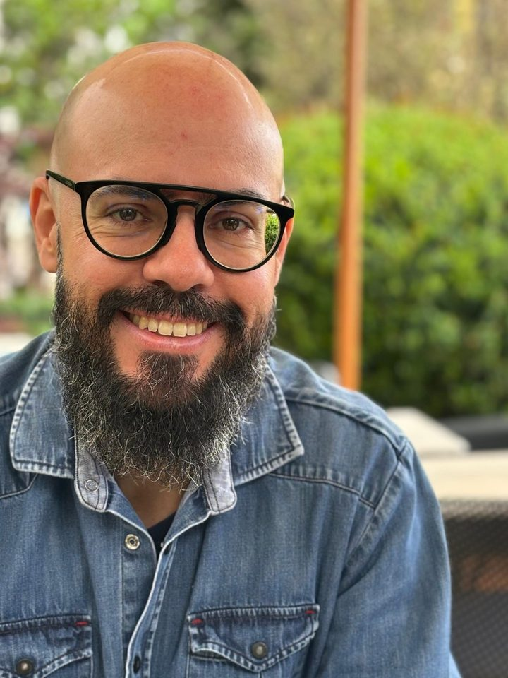

A saudade que não cabe
Uma dor que vem em ondas, nas datas, nos lugares, nos objetos, nas pequenas coisas do dia.
Psicoterapia online · Luto e perdas
A perda de alguém que amamos muda tudo. A terapia oferece um espaço seguro para sentir a dor, dar lugar à saudade e, aos poucos, encontrar uma forma de seguir vivendo com sentido.
O luto tem muitas formas
Uma dor que vem em ondas, nas datas, nos lugares, nos objetos, nas pequenas coisas do dia.
A sensação de que os outros esperam que você esteja melhor antes de você estar pronto.
O que poderia ter sido diferente, o que ficou por dizer, o que não deu tempo de viver.
Quando alguém que você ama está doente e a perda começa antes da despedida.
Uma perda gestacional, a morte de um animal de estimação, perdas que nem sempre recebem acolhimento.
Voltar ao trabalho, cuidar da família e reorganizar a rotina enquanto ainda dói.
Como trabalho o luto
Viktor Frankl, criador da logoterapia, perdeu os pais, o irmão e a esposa nos campos de concentração. Foi a partir dessa experiência que ele construiu uma psicologia sobre o sentido que pode existir mesmo no sofrimento mais profundo.
Na terapia, não se trata de esquecer nem de “superar”. Trata-se de encontrar um lugar para quem partiu e uma forma de continuar a própria vida com esse vínculo.
Um lugar onde a tristeza, a raiva e a saudade podem ser ditas sem pressa e sem julgamento.
Palavras não ditas, despedidas que não aconteceram, culpas que pedem para ser olhadas.
Descobrir, com o tempo, o que essa história de amor deixa como herança para a sua vida.
Na mídia

Quem vai te acompanhar
Minha trajetória é marcada pela busca por compreender o ser humano em sua totalidade. Minha primeira formação foi em Direito, experiência que despertou meu interesse pelas histórias e complexidades que atravessam a vida humana. Depois me formei em Ayurveda, o que ampliou meu olhar sobre a relação entre corpo, mente e espírito.
Foi na Psicologia que encontrei o caminho para integrar essas experiências em um propósito comum: acompanhar pessoas em sua jornada de autoconhecimento, consciência e construção de uma vida com mais significado.
Minha história familiar também foi marcada pelos exemplos de Zilda Arns e Dom Paulo Evaristo Arns, referências de cuidado, dignidade e serviço ao próximo, que fortaleceram em mim a compreensão do valor único de cada existência. Mais do que uma profissão, vejo esse trabalho como um chamado.
Como começar a psicoterapia
Envie uma mensagem dizendo que tem interesse. A partir dela, combinamos uma conversa inicial.
Um encontro de cerca de 20 minutos, sem custo, para você falar sobre o que está vivendo, tirar dúvidas e conhecer minha forma de trabalho.
Avaliamos se a psicoterapia comigo é o caminho adequado para o que você precisa agora.
Se decidirmos seguir, definimos um horário semanal fixo e começamos.
Perguntas frequentes
Não há prazo certo. Algumas pessoas procuram logo após a perda; outras, meses ou anos depois, quando percebem que a dor continua pesando no dia a dia.
Não. O objetivo não é esquecer quem partiu, mas encontrar uma forma de seguir vivendo com esse vínculo e com a saudade.
As sessões acontecem por videochamada, uma vez por semana, com duração de 50 minutos. Você só precisa de um lugar reservado e de uma boa conexão de internet.
É um encontro de cerca de 20 minutos, sem custo, para você contar o que está vivendo, tirar dúvidas e decidirmos juntos se a terapia comigo faz sentido para você.
Uma conversa inicial de 20 minutos, sem custo, para falar sobre a sua perda e entender como a terapia pode ajudar.
Agendar conversa de acolhimentoReflexões sobre sentido, autoconhecimento e a vida interior, no Instagram e no YouTube.